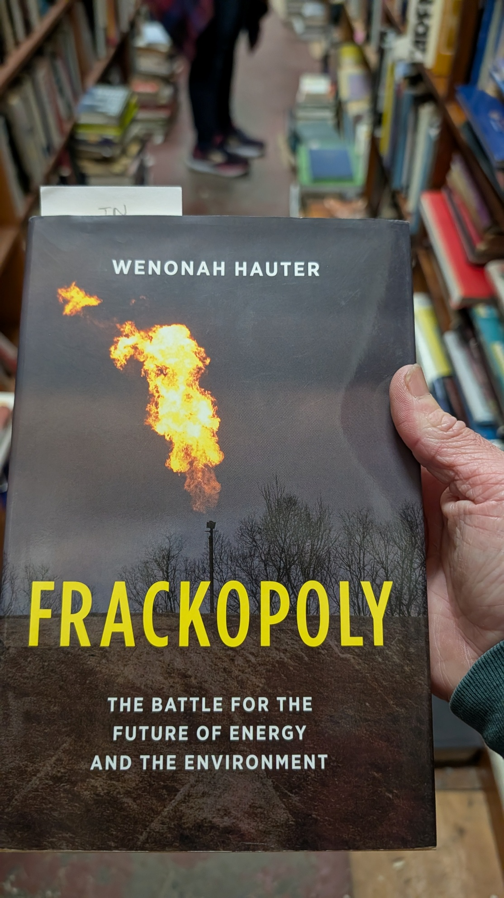

WEEKLY REMINDERS/ANNOUNCEMENTS – Eco 238, Week 5
Topics and Readings This Week: Efficiency! The Ultimate Carbon Calculator (germane to the Wegmans assignment); Tradeoffs in the Environment. These readings and lectures will be particularly useful as you prepare your ideas for the EETT and Interviews.
Braddock Bay Raptor Research: I sent a payment of $50 to them this week, you can see receipts on the website. Three of your classmates in the WTA group accepted their share, so we ended up collecting a gross of $65 meaning most of you playing the game and who owed money actually paid.
https://www.bbrr.org/2027-spring-internships/ in their Hawk Watch and Owl Count and Raptor Banding capacities

Weekly Assignment: I have posted your fifth weekly assignment, we discussed it in class – it is your chance to SHOW US something that you sorta always wanted to know but also would have been a huge effort to deliver prior to the emergence of very powerful LLMS. Your work is being put into a public poster session.
TA Office Hours and Info
Look for an announcement from our Head TA Jingyao Wang Wu for
an update on Office Hours and discussion session opportunities.
My Availability
Check tiny.cc/RizzoHours for up to date information.
I will be away from electronics from Friday afternoon through Monday morning.
Office hours on Tuesday will be replaced by Econ lecture Tuesday night and Dino BBQ afterward.
This Week at Rochester
A few things worth knowing about: Hugo McCloud at MAG Saturday; a huge home sports Saturday; Sunday’s wonderfully odd Synthposium with Moog and John Chowning; Monday’s Language City; Tuesday’s U.S.–Canada Trade War; and Wednesday’s TEDxURochester: reHuman.
Check out our full schedule here: https://rochesterrizzo.github.io/Rizzo-Hours/this-week-at-rochester/
Career Opportunity
Scroll down here a little, Edgeworth just posted.
Upcoming Special Events
Department of Economics Special Event

Title: Trade War: The View from Across Lake America!
Who: Joe Steinberg of the University of Toronto
Date: Tuesday, September 29th
Time: 6pm to 7pm
Location: Morey 321
More Info: It will be followed by a reception in Morey's Rettner Gallery with Dinosaur BBQ from 7-8:30.
RSVP for Food! Please register for the reception by Friday, September 25th using this link, so we can have a reasonable count for our reception order.
Link: https://form.jotform.com/262586026121048
The Politics and Markets Project, Hosted by Professor David Primo
Title: Topic TBD (this will be a moderated panel discussion)
Date: Wednesday, November 4th
Time: 7:30pm to 8:30pm
Location: Wegmans Hall, 1400.
More Info on the PMP: Follow on Instagram
Department of Economics Special Guest Lecture
Title: Human Capital for Humans, with moderation by U of R Economics Undergraduate Isaac Miller
Who: Pablo Pena of the University of Chicago
Date: Thursday, October 8th
Time: 3:30pm
Location: Morey 321
More Info: Why do people marry, have kids, invest in health, or choose a career? Economics has an answer, and it's not "supply and demand," it's human capital theory, the framework Nobel laureate Gary Becker built and spent his career applying to every domain of human life. Pablo Peña studied under Becker at Chicago, taught his famous course after him, and has now written the accessible version of that legendary class: Human Capital for Humans.
Join us for a talk and conversation with Professor Peña about the book — how economists think about parenting, aging, marriage, and the everyday decisions that shape who we become. Expect a short talk, a moderated discussion, and open Q&A. Copies of the book will be available for purchase (and signing) at the event.
About Professor Pena: Pablo Peña first encountered human capital theory twenty years ago as an undergraduate captivated by a course taught by Nobel laureate Gary Becker at the University of Chicago — an experience he's described as immediately clarifying. That encounter led him to TA the course, and eventually to teach it himself. Peña is now an Associate Instructional Professor in Economics and the College at the University of Chicago, specializing in applied price theory, human capital theory, and empirical economics, and his research uses experimental and quasi-experimental methods and large datasets to test economic theories with actionable applications for business, nonprofits, and government. Outside academia, he co-founded Microanalitica, previously served as Director of Private Sector Partnerships at the Development Innovation Lab, and headed Economic Studies at Mexico's National Banking and Securities Commission. He earned his Ph.D. in Economics from the University of Chicago.
His book, Human Capital for Humans: An Accessible Introduction to the Economic Science of People (University of Chicago Press, 2025), has been nominated as a finalist for the Manhattan Institute's 2026 Hayek Book Prize, and has drawn praise from economists including Steven Levitt, Tyler Cowen, and Nobel laureate Michael Kremer.
Department of Economics PIZZA and PAYOFFS Special Event

Title: Pizza and Payoffs: Everything you wanted to know about the Econ major — courses, careers, and what you can actually do with an economics degree.
Who: Professor Lisa Kahn and special guest Chris Nosko
Date: mid-November
Time: TBD
Location: TBD
More Info: Chris Nosko is the head economist for Amazon!
SOME THINGS THAT CAPTURED OUR ATTENTION
Diesel and Europe’s Doom? "It is now certain that a full-blown and extended global diesel emergency is unavoidable, and the only questions remaining are those of degree and fallout. Unfortunately for the world, but especially for those living in Europe, we can think of four highly probable ways in which things are about to get even worse. In isolation or in normal times, each of these would constitute a serious development. Taken together and in the current context, this four-bet parlay of doom would usher in historically unprecedented levels of crisis. We might as well get ahead of things and prepare accordingly..."
Adapting to Warmer Climate is Not Rocket Science: cool down. “we evaluate California’s heat standard – adopted in 2005 - and find that the standard substantially reduces the frequency of work injuries in the construction, agriculture, and transportation industries. The effects increase with outside temperatures and are larger among younger workers. Our findings have clear implications for workplace safety and contribute to ongoing policy debates.”
We Can’t Prevent Dysfunction Anymore? “NYC blog Gothamist reports that 17 “high-tech public restrooms” are coming to the city via startup Throne Labs. These bathrooms will require use of an app or card to enter, and patrons will have 10 minutes to use the toilet before the doors open. Among those concerned is NYC’s “Free to Pee Coalition,” who argue these toilets raise “access issues for homeless New Yorkers.” Correct. You can either have a dystopian free-for-all where public restrooms become literal homeless encampments, or guardrails to protect against the tragedy of the commons. (Though maybe I’m the weird one for not shooting up in a public restroom?) Unfortunately, the time limit does pose a problem for innocent IBS sufferers or unnamed Ashkenazi writers who struggle to tolerate lactose… but at least the Mission Impossible-esque scenes of people desperate to finish their business before the doors open will be hilarious. Time’s up… when you gotta go, you gotta go!”
Who Gets Career Advice from Alums? “This paper provides the first causal evidence that gender affects the information an individual receives about careers. We conduct a large-scale field experiment in which real college students seek career information from 10,000 working professionals. When students ask broadly for information about a career, female students receive substantially more information on work/life balance than male students. … we conclude that gender gaps in information received about work/life balance are consequential for gender gaps in career intentions.”
Proof of Life! “Nearly 75 years ago, among the windswept sand of the Idaho desert, America turned on four light bulbs with a nuclear reaction, beginning the (first) age of nuclear energy in America.
In the decades that followed, nuclear was hailed as our clean, cheap energy savior. Innovation accelerated — and while reactors were expensive and unreliable initially, new designs made them cheaper and safer.
Then, we just stopped. We lost our innovator spirit in the dunes.
On June 4th, 2026, we hit an encore. In those same Idaho winds, nuclear startup Antares took its Mark-0 reactor “critical” — meaning, in the parlance of the nuclear world, alive. We use a neutron to split a uranium atom, which throws off more neutrons that split more uranium atoms. Once that nuclear fission reaction can sustain itself without external help, the reactor “goes critical.”
It’s a proof of life: a test, showing that a reactor works. Three more companies took reactor designs critical by July 4th.
Thirteen months ago, this seemed like an impossibility — but thanks to the efforts of less than 40 government employees, we turned the tide.”
We Have Invented Saltless Salt: “Japanese professor Homei Miyashita designed a gizmo for making foods salty without salt (video above) that he calls Electric Salt. Using an electrode embedded in a bowl, voltage is passed through the food, which charges its sodium ions, causing them to stick to your tongue better. You can even set the gizmo to different saltiness levels. Miyashita won a Nobel Prize for it this year.” Now do this for roads in the winter!
“A few weeks ago, the European Space Agency (ESA) demonstrated that it could use an almost-8-square-foot (2.37 square meter) lens to focus sunlight — or a CO2 laser — to melt synthetic lunar regolith and create "bricks" with strength comparable to concrete. Moon bricks are important because they can be used to build roads, and you need roads because dust kicked up by lunar industrial activity will be incredibly annoying; “agitated into the low-gravity environment, the tiny, charged particles hang in space and pose a major hazard to the intricate working of Earth's machinery.”
When folks are scared of nuclear power, they often joke, “hahaha, we’ll all soon be glowing” as if glowing is not natural. (or as if “natural” is a synonym for good or bad) … “Scientists believe luminescent quality is widespread after finding 86% of species studied had fur that glowed in UV light”
Our Renewables Revolution will Find Us Mining Asteroids for Metals: “over the next 30 to 40 years, harvesting metals from asteroids could become not only profitable but also the predominant means of mining precious metals as prices rise and the cost of working in space declines.”
WINTERCOW’S MOOING: Crabpotism and Antisocial Punishment. Creepy voice podcast here; Need some time to make it sound better, suggestions welcome.
CHART(S) OF THE WEEK: An historically incredible thing is happening right under our noses. “Over the past three years, the cost of a given level of AI performance has fallen an average of some 47% per quarter. That is a 13-fold drop every year – a faster rate than any other transformative technology in history. To give an example, OpenAI o3 cost about $0.30/question to attain 75% on GPQA Diamond in January 2025, while GPT-5.6 Luna attained roughly the same score for $0.0004 in mid-2026—a roughly 725-fold decline in under 18 months.”

PHOTO OF THE WEEK: A stroll through Cooperstown and a glimpse into middle class life a few generations ago:

Photo of the Week
September 19, 2026 · 19 photographs
Scroll through. Click any photo to expand.
Click or tap to open · Use the arrows to browse · Zoom in for a closer look
VIDEO/DOCUMENTARY/BOOK/CARTOON, ETC OF THE WEEK: Apocaholics Anonymous Reading

* * *QUOTE * * *
My brother and I play games inventing words to describe things that need words. Here is our latest:
Peripetia /pɛr-ɪ-pə-ˈtiː-ə/ noun
1. The paradoxical motion of a small, highly desired object (such as a single piece of popcorn or a dropped piece of candy) that, upon slipping from your hand, bounces, rolls, and flutters an impossibly vast distance, defying energy conservation laws, before lodging itself deep inside the only unreachable crevice in the room.
2. The acute, helpless indignation experienced while staring at a lost treat through a quarter-inch gap under the refrigerator.
Etymology: Blending ancient Greek peripeteia (a sudden reversal of fortune or tragic turn in drama) with petia (reminiscent of miniature particles or treats).
Example: "I dropped the single best-buttered kernel of popcorn, and through sheer peripetia it bounced off my knee, accelerated across six feet of hardwood, and slid behind the radiator where it will remain forever."
Derived Terms:
Peripetic (adj.): Describing an object's supernatural ability to gain kinetic energy after impacting the floor.
Peripetial Horizon (n.): The exact spatial threshold beneath a couch or cabinet beyond which dropped food is lost to the cosmos. Truth is the only safe ground to stand upon."
- APR and MJR